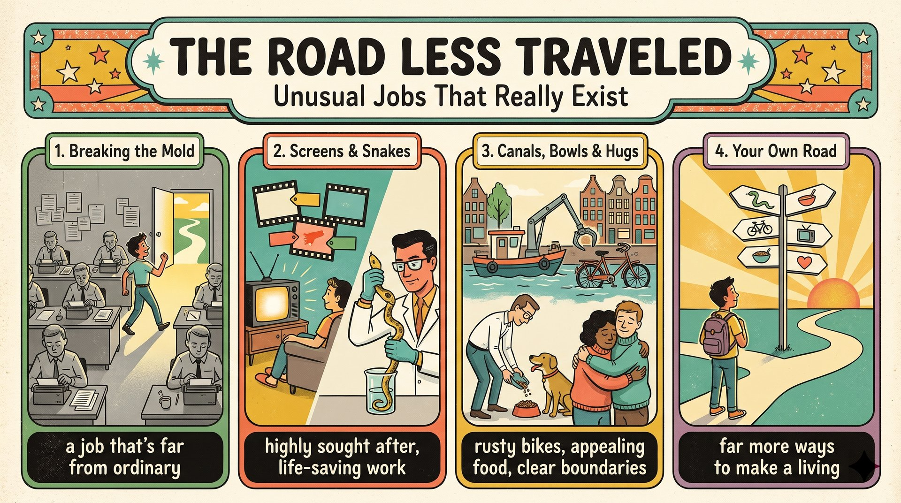

去年秋天以前，我以為工作就是坐辦公室或待在實驗室；學校的職涯博覽會改變了一切。
far from ordinary標籤員的工作讓愛看電影的我超羨慕；取蛇毒員的影片看得我滿心焦慮。
filled me with anxiety機械爪撈起生鏽自行車；試吃員的問題逗笑全場；擁抱者談起保護大家的界限。
what if your favorite snack was made for dogs回家路上我下定決心：無論做什麼，都要靠喜歡的事謀生。
make a living doing something I loveI (S) + thought of (V) + a job (O) + as ...。
Until last fall 介系詞片語；as 後接兩個 V-ing。
do experiments（做實驗）。
Until last fall,（時間片語）I thought of a job（主幹）as sitting in an office（as＋V-ing①）or doing experiments in a laboratory.（V-ing②）語塊 1 ➔ 語塊 2 ➔ 語塊 3 ➔ 語塊 4 地點提前
時間先翻，「去年秋天以前」。
Until 在這裡後面只接名詞片語，是介系詞。Until ... 開頭，等於先告訴讀者「後來會有變化」，引人讀下去。
think of A as B；do an experiment。Until ..., I thought ...That (S) + changed (V)。
when 關係副詞補充說明 fair；that 主格關代修飾 work。
career fair（職涯博覽會）；numerous＋複數；far from。
That changed（主幹）at our school's career fair,（地點片語）when numerous guests described work（when 子句）that was far from ordinary.（主格關代子句）語塊 2 提前 ➔ 語塊 1 ➔ 語塊 3 ➔ 語塊 4 提前
把地點拉到前面，「在學校的職涯博覽會上」。
, when：往左看是場合 career fair，逗號後是補充說明「在那時候……」。that：往左看名詞 work，往右看缺主詞，是主格關代。work 不可數，所以用 was。
far from ordinary；, when 補充說明。That changed when ... 是故事轉捩點的經典句。The first speaker (S) + explained (V) + that ... (O)。
that 名詞子句。
assign A to B；時態一致（explained ➔ assigned）。
The first speaker, a Netflix tagger,（主詞＋同位語）explained that she assigned specific keywords（動詞＋名詞子句）to shows all day.（對象＋時間）語塊 1 ➔ 語塊 3 提前 ➔ 語塊 2
先把同位語併進來，「第一位講者是 Netflix 標籤員」。
a Netflix tagger 是同位語，說明 speaker 的身分。that：往左看動詞 explained，往右看完整句，名詞子句。主句過去式，子句也跟著用過去式。
explain that＋S＋V，不說 explain me that。The first speaker ...、Next ...、The last guest ...I (S) + was amazed (V)，to hear ... 表原因。
to hear 不定詞表情緒原因；that 名詞子句；like me 修飾 film lovers。
be amazed to V；人感到用 -ed；be sought after by。
I was amazed to hear（主幹）that her position was highly sought after（名詞子句）by film lovers like me.（by 片語）語塊 1 ➔ 語塊 2 主詞 ➔ 語塊 3 提前 ➔ 語塊 2 動詞
主句先翻，「我驚訝地聽到」。
that 跟在 hear 後面，完整句，名詞子句。
be amazed to V；be sought after by。I was amazed to ...a snake milker (S) + showed (V) + us (IO) + the collection container (DO)。
he used 修飾 container；to gather venom 表目的。
show sb sth 雙受詞；use A to V。
Next, a snake milker showed us（主幹）the collection container（直接受詞）he used to gather venom.（省略關代子句）語塊 1 ➔ 語塊 3 提前 ➔ 語塊 2
Next 照順序翻，「接著，取蛇毒員給我們看」。
he used ___ to gather venom，used 缺受詞，用什麼？container。used to 誤當「過去習慣」：這裡是 use＋受詞（被提前）＋to V。
show sb sth＝show sth to sb。Just watching his video (S) + filled (V) + me (O)，but he (S) + said (V) + that ...。
but 連接；that 名詞子句；動名詞當主詞。
fill sb with N；普遍事實不受時態一致限制。
Just watching his video（動名詞主詞）filled me with anxiety,（動詞片語）but he said that his risky work（轉折＋名詞子句）helps save lives.（子句動詞）語塊 1 ➔ 語塊 2 ➔ 語塊 3 ➔ 語塊 4
Just watching 翻「光是看」，後面搭「就」。
but 前後都是完整句。fill sb with anxiety；Just V-ing＝光是。... filled me with anxiety 比 I was nervous 生動。A man from Amsterdam (S) + shared (V) + photos (O)。
that 受格關代，修飾 bikes，pulls 缺受詞。
pull A from B；then 位置。
A man from Amsterdam then shared（主幹）photos of the rusty bikes（受詞）that his boat's huge claw pulls from the canals.（受格關代子句）語塊 1 ➔ 語塊 3 提前 ➔ 語塊 2
主詞和動詞先翻，「接著，一位來自阿姆斯特丹的男士分享了」。
his boat's huge claw pulls ___，主詞是 claw，pulls 缺受詞，受詞就是 bikes。所以是受格關代，可省略。pull A from B；受格關代可省。a pet food tester (S) + made (V) + us (O) + laugh (OC)。
by asking 手段；引號內 What if 問句。
make＋O＋原形（✗ make us to laugh）；介系詞 by＋V-ing。
After that, a pet food tester made us laugh（主幹）by asking,（by＋V-ing（手段））“What if your favorite snack was made for dogs?”（引述問句）語塊 1 ➔ 語塊 2 ➔ 語塊 3
After that 照順序翻，「之後，寵物食品試吃員逗得我們哈哈大笑」。
What if ... was 用過去式，表示這件事機率很低，只是開玩笑地假設。made us laugh：make 是使役動詞，後面接原形 laugh，不加 to。
make＋O＋V；被動 be made to V。She (S) + explained (V) + that ... (O)。
that 名詞子句。
must＋原形；every＋單數名詞；safe and appealing 並列形容詞。
She explained（主幹）that every recipe must be safe and appealing（名詞子句）for animals.（對象）語塊 1 ➔ 語塊 2 ➔ 語塊 3
順著翻就好。
that 往左看動詞 explained。every recipe 看起來是很多個，文法上是單數。這裡 must 後面用原形 be，不受影響；但如果換成現在式，就是 every recipe is。
every＋單數；appealing for／to。The last guest (S) + talked about (V) + hugging sessions and the boundaries (O)。
that 主格關代修飾 boundaries。
keep＋O＋Adj.；everyone 單數，但 keep 的主詞是 boundaries。
The last guest, a professional cuddler,（主詞＋同位語）talked about hugging sessions（動詞①）and the boundaries that keep everyone safe.（受詞②＋關代）語塊 1 ➔ 語塊 2 ➔ 語塊 3 提前
同位語併進主句，「最後一位來賓是專業擁抱者」。
keep＋O＋Adj.；talk about。The last ... 告訴讀者敘事要收尾了。I (S) + made (V) + a decision (O)，冒號後說明內容。
whether ... or 讓步；doing something (that) I love。
make a decision；make a living＋V-ing（靠做……謀生）；省略受格關代。
On my way home, I made a decision:（主句）whether I work with snakes or bikes,（讓步子句）I want to make a living（主句內容）doing something I love.（V-ing＋省略關代）語塊 1 ➔ 語塊 2 ➔ 語塊 4 提前 ➔ 語塊 3
On my way home 先翻，「回家路上，我下定決心」。
something I love 中間省略 that，love 缺受詞。
make a living (by) V-ing；on one's way home，home 前不加 to。1. 請選出最適合填入 (1) 的字：
thought of A as B。2. 請選出最適合填入 (2) 的字：
assign A to B：把關鍵字指定給節目。3. 請選出最適合填入 (3) 的字：
fill sb with anxiety：讓人滿心焦慮。4. 請選出最適合填入 (4) 的字：
What if＋S＋過去式?：假設提問。5. 請選出最適合填入 (5) 的字：
Whether A or B：無論動物還是機器。6. The old gate was so ________ that it made a terrible noise when we opened it.
rusty（生鏽的）。7. I keep all my cookies in a large glass ________ on the kitchen shelf.
container。8. During my first ________ with the counselor, I talked about my stress at school.
session。9. We visited the science ________ and watched the students do experiments.
laboratory。10. 下列哪一句文法正確？
make＋O＋原形。11. 下列哪一句文法正確？
be amazed to V。12. 「我想靠做自己喜歡的事謀生。」最佳英譯是：
make a living V-ing；省略關代後 love 不再加 it。13. What changed the writer's mind about jobs?
14. How did the writer feel while watching the snake milker's video?
15. What decision did the writer make at the end?